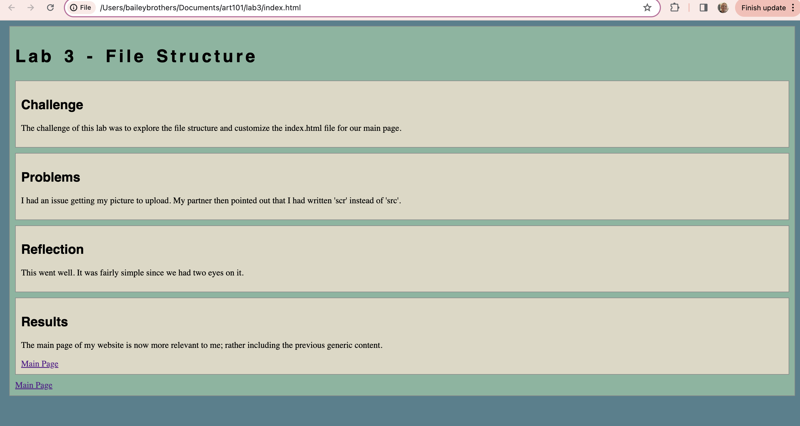
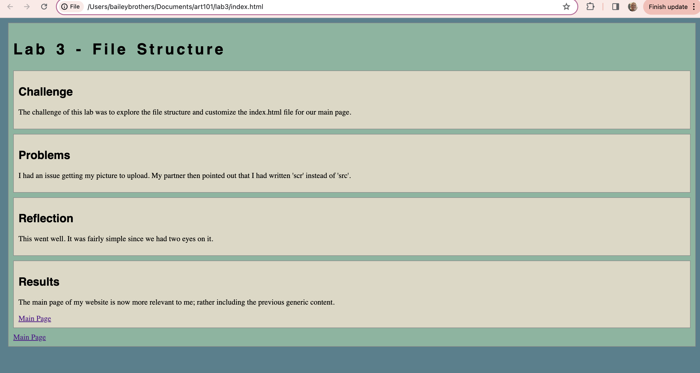

Lab 3 - File Structure
Challenge
The challenge of this lab was to explore the file structure and customize the index.html file for our main page.
Problems
I had an issue getting my picture to upload. My partner then pointed out that I had written 'scr' instead of 'src'.
Reflection
This went well. It was fairly simple since we had two eyes on it.
Results
The main page of my website is now more relevant to me; rather including the previous generic content.
Main Page 
